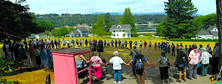
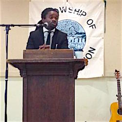

Friends,
I'm honored to announce that Oregon FOR and FOR-USA have established scholarships -- for youth and young adult peace and justice activists and scholars, ages 15 to 34 -- to the FOR Centennial Conference in Seabeck, WA, this July.
Our Centennial Conference, "Persevering for Peace," will take place west of Seattle, WA, from July 1 to 4 of this year. While we are 100 years old, we want to look to the future rather than glorify the past. That's why we want to bring more youth and young adults than ever to this peace and justice event, itself the 58th annual Pacific Northwest Regional FOR conference.
Scholarships will cover the full conference admission, housing, and meals, normally about $250.
Unfortunately, we are not able to cover transportation costs to Seabeck, but we are hoping that scholarship recipients can work with local FOR chapters and peace and justice groups to raise money for their travel to the conference.
Scholarship applications are due March 15.
Apply online to the FOR Centennial Conference scholarship now!

About the Centennial Conference
For the past 57 years, FOR Oregon and FOR Western Washington have held a retreat at the scenic Seabeck Conference Center west of Seattle, WA. This year, FOR-USA is co-hosting the event as part of its centennial celebrations. Oregon FOR has allocated $4,000 for scholarships and FOR-USA is matching that amount in partnership for the scholarship program.
Keynote speakers include Jamila Raqib, the executive director of the Albert Einstein Institute and a close colleague of Dr. Gene Sharp on nonviolent revolution, and Erica Chenoweth, a member of the Council on Foreign Relations and author of Why Civil Resistance Works: The Strategic Logic of Nonviolent Conflict. A special nonviolence training track will be open to youth and young adults, led by FOR Bayard Rustin Fellow Rev. Osagyefo Sekou. Additional speakers and workshops will also be led by peace and justice activists, as well as FOR-USA staff and national council members.
Learn more about the FOR Centennial Conference at Seabeck.
Share this information with youth and young adults
This is a great opportunity for mentors to enable their best and brightest to connect with others like them.
In particular, Rev. Sekou has been at the front lines of nonviolent response in Ferguson and the Movement for Black Lives, was recently exonerated in a trial after nonviolently demonstrating through prayer, and has a long history training youth and young adults in nonviolent direct action. In addition to the nonviolence training track, there will be many different workshops and events on topics of peace, justice and nonviolence.
So if you know others who would benefit from this event, please share this information with them!
Attend the FOR Centennial Conference yourself
For those who are not seeking a scholarship to the conference, we hope you will consider attending as well! The conference grounds can handle 250 people, and since this is a national conference we expect spots to fill up quickly.
General registration has not yet started, but if you think you might be interested in attending, be sure to sign up on the Seabeck conference website to receive updates as soon as registration is available. You can also follow the conference Facebook page or the conference Twitter account.
To a nonviolent future,
 Laurie Childers Laurie Childers
Chair, National Council
Fellowship of Reconciliation
|